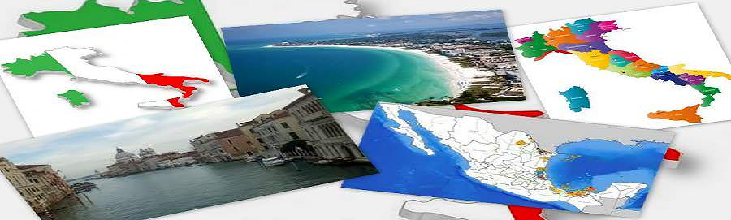
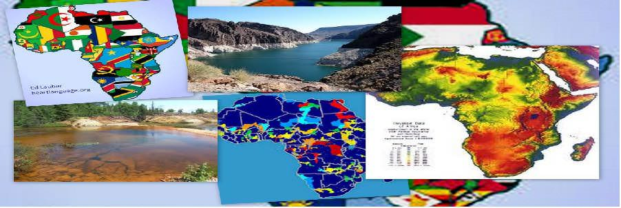
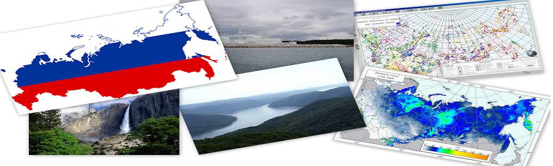
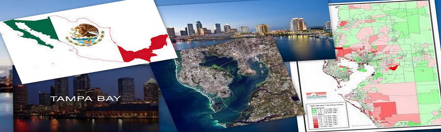
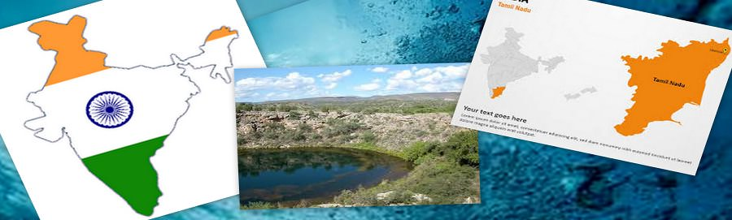
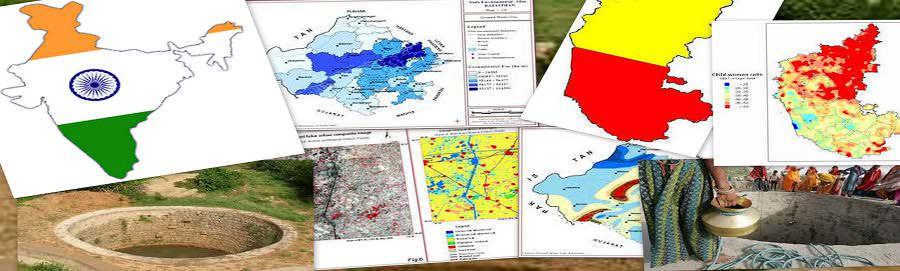

Caso de estudio
Aprender del pasado, mejorar el futuro ...






ESTUDIO DE CASO - ITALIA
Italianos Provincia Aparejos Peligros Hidrológicos con SIG y Teledetección:
La provincia autónoma de Bolzano se encuentra en el norte de Italia y comparte una frontera con Austria. Con una superficie de 7.400 kilómetros cuadrados, Bolzano es principalmente montañoso, su elevación que van desde 200 a más de 3.800 metros sobre el nivel del mar (ASL). Departamento 30 de Bolzano es la agencia de la provincia a cargo de la resolución de los conflictos entre el medio ambiente natural y las necesidades humanas.
Para ello, en los últimos años, la provincia ha diseñado e implementado varias geodatabases SIG que incluyen conjuntos de datos genéricos, como los modelos digitales de elevación, la cobertura del suelo, mapas de uso del suelo, y ortofotografía. También se incluyeron los conjuntos de datos más específicos, tales como el inventario de las inundaciones históricas y las inundaciones de escombros y el inventario de las estructuras hidráulicas ya existentes. Un proyecto marco específico llamado el Sistema de Información de Peligros y riesgos hidrogeológicos (RSI).
Como parte del proyecto de Reglamento Sanitario Internacional, el Sistema de Información de la Cuenca del Departamento 30 (Cuenca 30) aplicación fue diseñada para simplificar la extracción, a nivel de cuenca, de la información más relevante a los efectos de la planificación de nuevas estructuras hidráulicas.
Dado que la mayoría de los administradores de las inundaciones del departamento ya estaban familiarizados con la plataforma de software ArcGIS Desktop, Cuenca 30 se llevó a cabo como una extensión de ArcGIS Desktop. Los datos de entrada requeridos por Cuenca 30 es todo lo espacial e incluye capas generales sobre el uso del suelo, la geología y morfología y capas más específicas acerca de la red hidrológica, estructuras hidráulicas que ya están en su lugar, y peligros hidrológicos.
ESTUDIO DE CASO - AFRICA
Base de Datos de Recursos de Agua de África utiliza GIS & Teledetección:
La Base de Datos de Recursos de Agua de África (PREMIO) incluye una extensa herramientas de archivo y SIG diseñadas para facilitar la gestión de los recursos acuáticos continentales responsables con un objetivo general de la seguridad alimentaria.
La información almacenada en el archivo de datos incluye los cuerpos de agua superficiales, cuencas hidrográficas, especies acuáticas, ríos, límites políticos, densidad de población, los suelos, las imágenes de satélite y fisiográfica y datos climatológicos. AWRD fue diseñado para ser utilizado por los administradores, profesionales técnicos, analistas espaciales, maestros y estudiantes.
AWRD fue diseñado con base en las recomendaciones de la Comisión de Pesca Continental y Acuicultura para África y es a la vez una expansión y una actualización de un proyecto anterior liderado por la Dirección de Recursos Acuáticos para el Programa de Desarrollo de la Comunidad Local, llamada la base de datos del África Meridional de Recursos Hídricos de la Comunidad para el Desarrollo.
Para visualizar y analizar los datos de archivo, PREMIO contiene aplicaciones personalizadas y herramientas programadas para ejecutarse en ArcView. La base de datos permite la integración de los diferentes tipos de información en un programa cohesiva que, debido a su naturaleza visual, es fácil de entender e interpretar.
La publicación de base de datos se presenta en dos partes: conceptos y casos prácticos de aplicación, y un manual técnico y libro. La interfaz principal PREMIO, juegos de herramientas, y los datos esenciales para la función de AWRD se distribuyen en dos DVD que acompaña al manual técnico y libro.
ESTUDIO DE CASO-RUSIA
Debido a la visualización espacial avanzada y análisis capacidades de los SIG, los investigadores de la Universidad de San Petersburgo Electrotécnica (ETU) en Rusia son capaces de trazar y estudiar los cuerpos de agua naturales; sus contaminadores; los de origen, la ubicación y los niveles de agentes contaminantes; y el contenido de los contaminantes. Su análisis de los cuerpos de agua naturales y las empresas industriales ofrece la oportunidad de predecir el nivel de impacto industrial y estudiar varios escenarios para hacer recomendaciones para el uso racional de los recursos naturales de agua.
Un cuerpo de agua de Investigación
el sistema de monitoreo basado en el SIG se estableció en parte de Neva río al noroeste de Rusia, ubicado en el Distrito Kirovsky de Leningrado Oblast. El río Neva es una parte integral del sistema acuático de la región, que también incluye a orilla del lago Onega, el río Svir, Ladozhskoe Lake, Nevskaya Guba Bay, y la parte oriental de Finsky Bay. Todo este sistema acuático se ve afectada por un área industrialmente desarrollado que sirve como la principal fuente de contaminación. El río Neva recibe aguas residuales vertidas desde las plantas municipales de tratamiento de aguas residuales, aguas residuales no tratadas, y los efluentes procedentes de las empresas industriales y agrícolas situados cerca de sus orillas.
Datos de los hallazgos del río Neva se almacenan en un sistema de información de la evaluación medio basado en SIG, que está diseñado para realizar análisis hidroquímica de la calidad del cuerpo de agua para evaluar los efectos adversos producidos por los seres humanos y para establecer los niveles permisibles de la carga ecológica sobre los recursos hídricos.
ESTUDIO DE CASO-FLORIDA
Evaluación de la vulnerabilidad de la Florida Acuífero Usos SIG:
desarrollado recientementeModelos de vulnerabilidad de acuíferos basados en SIG proporcionan valiosas herramientas de protección de las aguas subterráneas con aplicaciones de amplio alcance en toda la Florida. La intención de mejorar los esfuerzos de protección para los frágiles recursos de agua potable de la Florida, los modelos ofrecen nuevas opciones para los planificadores de la comunidad, personal de obras públicas, profesionales del medio ambiente, el agua de lluvia y los ingenieros de aguas residuales, y los gobiernos locales. Estos modelos se utilizan ampliamente en muchas áreas, incluyendo la planificación del uso del suelo, la identificación de áreas de recarga, la planificación de las aguas residuales, la protección de la cabeza de pozo, la identificación de áreas ambientalmente sensibles, la gestión de las aguas pluviales, y protection.Aquifers primavera se encuentran entre las más importantes fuentes de agua potable en los Estados Unidos. En Florida, se estima que el 90 por ciento del agua potable se obtiene de acuíferos, por lo que la identificación de áreas donde los sistemas acuíferos son más vulnerables a la contaminación es un componente esencial de un programa integral de gestión de las aguas subterráneas y la protección.
El proyecto que surgió fue nombrado Florida Acuífero Vulnerability Assessment (FAVA) .El objetivo principal del proyecto FAVA era proporcionar una herramienta de gestión de los recursos hídricos y la protección científicamente defendible que facilitó la planificación del uso del suelo para ayudar a minimizar los impactos sobre la calidad del agua subterránea. Los diseñadores del proyecto trataron de generar herramientas significativas y útiles para ayudar a asegurar una protección equilibrada y el uso futuro de los recursos de agua subterránea mediante la caracterización de la vulnerabilidad natural de los sistemas acuíferos.
ESTUDIO DE CASO-TAMPA BAY
Tampa Bay Water despliega SIG al Modelo de Distribución de Agua Potable:
Tampa Bay Water, una autoridad regional de agua cuya jurisdicción incluye tres condados densamente pobladas en Florida (Hillsborough, Pasco y Pinellas), es responsable de proporcionar agua potable a los servicios públicos del gobierno miembro regional de la zona de Tampa Bay. Estos gobiernos locales incluyen el Condado de Hillsborough, la ciudad de New Port Richey, Condado de Pasco, Pinellas County, ciudad de San Petersburgo, y la ciudad de Tampa.
Tampa Bay Water basa en SIG para diversos aspectos de sus operaciones . lo que ayuda a minimizar los impactos en sus suministros de agua subterránea y agua superficial, así como los sistemas de humedales y acuíferos circundantes de la región.
En junio de 2007, Tampa Bay Water fue encargado por sus gobiernos miembros para desarrollar una distribución de agua de alta resolución (consumo) de aplicación para analizar dónde y cómo se está utilizando el agua potable en la región. Esta aplicación, llamada GOVNET, se convertiría en la base para la gestión de la funcionalidad de todo el futuro de la conservación del agua efforts.GOVNET incluye la posibilidad de ver, analizar, y los datos de consumo de agua de series de tiempo de consulta en diferentes resoluciones (regional, ciudad, barrio, calle, paquetería) y recuperar tablas, gráficos e informes para la demanda de agua. La implementación exitosa de GOVNETse hizo posible porque Tampa Bay Water había reunido con diligencia los datos de facturación de series de tiempo de sus gobiernos miembros sobre una base mensual desde 1998 hasta la actualidad a nivel de cuenta.
Tampa Bay Water está explorando aplicaciones futuras para el marco GOVNET, incluyendo la incorporación de los datos del programa de conservación para permitir que los administradores de la demanda para ver cómo responda el consumo de agua es a las medidas de conservación dirigidos a través del tiempo.
CASO ESTUDIO- INDIA
TUTICORINEl Taluk Ottapidaram extiende entre latitudes N 9 ° 3'14 "y 8 ° 48'33" E longitudes 77 ° 47'04 "y 78 ° 12'53 " la principal fuente de agua subterránea en el área de estudio es la lluvia durante el monzón temporada. El actual área de estudio es Ottapidaram Taluk, Tuticorin Distrito, Tamil Nadu y la India. El problema de este estudio es un caso representativo de la sobreexplotación de los recursos de agua subterránea, lo que lleva a la continua agotamiento del grano, así como los acuíferos subterráneos. La aplicación de la cada vez más e internacionalmente aceptado método de recarga artificial en el agua subterránea acuífero se decidió ser el más eficaz para la restauración del equilibrio de la sistema hidrogeológico.
The satellite data of IRS LISS III se clasificaron utilizando la técnica de clasificación supervisada. Uso de la tierra / tierra mapa de cobertura y Mapa Geomorfología mapa de la distribución espacial preparado a través de procesamiento de imágenes ERDAS software. La clasificación de uso de la tierra adoptado en el presente estudio se basa en Nacional Clasificación Agencia de Teledetección. El mapa Geología fue recogida en la Servicio Geológico de la India, rastreado, escaneada y digitalizada en SIG.
La recarga de aguas subterráneas del Ottapidaram Taluk es el resultado de una interacción entre nivel de la geomorfología y el agua en el proceso de ajuste permanente entre restrictivo. notado en el norte al lado este y cubre un área de unos 40,81 kilometros2 de lugares como Tharuvaikulam y Pudur Pandiyapuram son zonas altamente potenciales y artificiales de recarga en el área de estudio. seguido por el moderadamente área adecuada para la zona de recarga cubre un área de aproximadamente 638,42 kilometros 2 de la área total de estudio. Por lo tanto, los SIG se había demostrado ser esencial en la adquisición de conocimientos sobre las aguas subterráneas en la región.
CASO ESTUDIO- INDIA
BILWARABhilwara está situado entre 25 ° 0.00 'a 27 ° 0.50' Latitud Norte y 74 ° 0,03 'a 75 ° 0.25' de longitud este. El proyecto para la detección de reservas de agua subterránea se sintió en esta región. En este proyecto tanto los datos de satélite, así como los datos de campo extensas fueron utilizados para la preparación de diversos mapas temáticos. En la medida de la imagen IRS-1D LISS III que se refiere a los datos de satélite se utilizó para la interpretación y el análisis.
Este estudio se llevó a cabo para algunas partes del distrito de Bhilwara, Rajasthan para explorar las perspectivas de las aguas subterráneas de la zona. Todas los temas hidrogeológicos se creó por la interpretación de los datos de satélite y posteriormente verificado por cheque campo. Una parte de esto, un tema hidrológico y la base También se creó en SIG. Todos los temas se integró y se analizaron para preparar los mapas perspectivas de aguas subterráneas. Basado en el patrón de la hidrogeología y drenaje, lugar adecuado para estructuras de recarga era se sugiere en el mapa.
GULBARGAÁrea de estudio Gulbarga es una ciudad de rápido desarrollo en el norteño estado de Karnataka de la India. La ciudad se encuentra en La latitud de 17 ° 17 'y 17 ° 22' y longitud de 76 ° 47 'y 76 ° 52'Se consideró necesario que la sequía crónica distrito propenso del estado de Karnataka.
Varios parámetros físico-químicos como el cloruro, nitrato, TDS, y la dureza se analizaron en las muestras de aguas subterráneas utilizadas para los propósitos y sus niveles potable en diferentes lugares del estudio. SIG demostró ser un sistema extraordinariamente beneficioso en esta región . El rápido crecimiento de la población urbana en la ciudad de Gulbarga llevó a los asentamientos no planificados en el que el acceso a alcantarillado es limitado. información revelada por SIG sugirió varias medidas para nuevas mejoras.